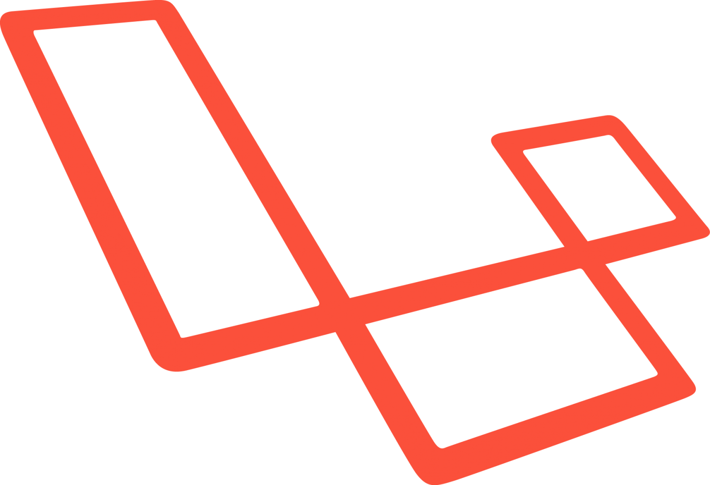

Программная платформа Laravel
Laravel – фреймворк, распространяющийся бесплатно. Содержит открытый код, написанный на PHP языке и найти его можно в свободном доступе на GitHub. Многие веб-разработчики недооценивают Ларавел - это не просто фреймворк, а целая экосистема для сетевых разработок.
Используют Laravel совместно с моделью MVC (Model View Controller). Среди специалистов, разрабатывающих различные приложения, Laravel считается лучшим MVC-фреймворком, который идеально подходит для тех, кто желает создать надежный веб-проект.
История развития фреймворка
Впервые фреймворк увидел свет в 2011 году. Первая версия уже включала в встроенную поддержку для аутентификации данных, локализации, маршрутизации и других рабочих механизмов. Осенью 2011 была разработана улучшенная вторая версия. А в августе 2017 был представлен Laravel 5.5.
Совсем недавно 19 марта 2020 года вышла новая версия фреймворка 7.2. На данный момент Laravel является популярной и многообещающей программной платформой. Заслуживает звания лучшего фреймворка корпоративного уровня и для личных проектов.
Инструменты разработчика для фреймфорка Laravel
Разработчик в этой программной платформе найдет следующие инструменты для создания веб-проектов:
- Laravel IDE Helper Generator – это пакет, который создает файл-помощник, где находятся классы фасадов. Теперь разработчику не нужно больше отказываться от фасадов в коде, потому что они занимают много места;
- Composer. Этот инструмент позволяет обновлять программу. Платформу и подгружать в нее другие пакеты. Они не имеют зависимостей, поэтому легко добавляются в программу;
- Debugbar. Установлен в Laravel для того, чтобы контролировать и приводить в порядок код. Отслеживает SQL-запросы для оптимизации. Например, разработчик всегда будет в курсе количества созданных запросов, если вдруг забыл дописать в коде «: : with (‘smth’)». Laravel Debugbar автоматически интегрируется в PHP Debugbar.
Функциональные и модульные тесты также есть в этой программной платформе. По ним разработчики проверяют функционал приложения и логику.
Чтобы собрать проект воедино разработчики могут использовать API Laravel Mix. Этот модуль программного интерфейса приложений для определения инструкций сборки WebPack.
Что позволяет делать Laravel веб-разработчикам
С помощью программной платформы Laravel веб-разработчик может:
- расширять любые элементы проекта;
- маршрутизировать входящие параметры, так как ему удобно;
- работать с множеством различных баз данных, менять их строение и возвращаться к исходному коду;
- централизованно подключать необходимые компоненты проекта, благодаря тому, что платформа позволяет работать с сервис-провайдером напрямую.
Работая на Laravel, разработчик получает универсальный инструмент, с помощью которого может добиться высокой скорости создания сайтов.
Особенности сайтов, которые были разработаны на фреймворке Laravel:
- обладают широким функционалом страниц, удобным для пользователей;
- имеют высокую степень безопасности баз данных;
- разработчик может в любой момент расширить функционал приложения.
Программная платформа Laravel – это сильный инструмент с удобной административной панелью. Он изменяется и дорабатывается ежегодно. Подходит под любые задачи.
На данной платформе была разработана система управления сайтом October CMS.
Что представляет из себя October CMS
Это многофункциональная CMS, написанная в фреймворке Laravel. Он прост и удобен, а также имеет открытый код. Есть возможность для расширения с помощью бесплатных модулей и плагинов.
Элементы шаблонов реализованы в виде файлов, что помогает работать с контентом прямо в браузере. Присутствует мощный кеш, который практически не создает проблем. Административная панель легко настраивается под себя. Дополнительные поля и вкладки отображаются красиво и аккуратно.
Если вы устали от уныния, хотите классный сайт на Laravel, клиентов и прибыли — посмотрите наши кейсы и заполните заявку.